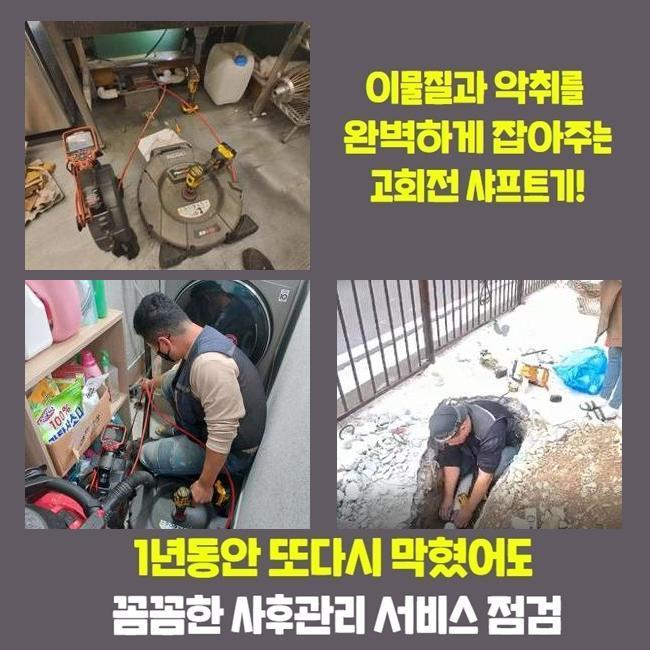
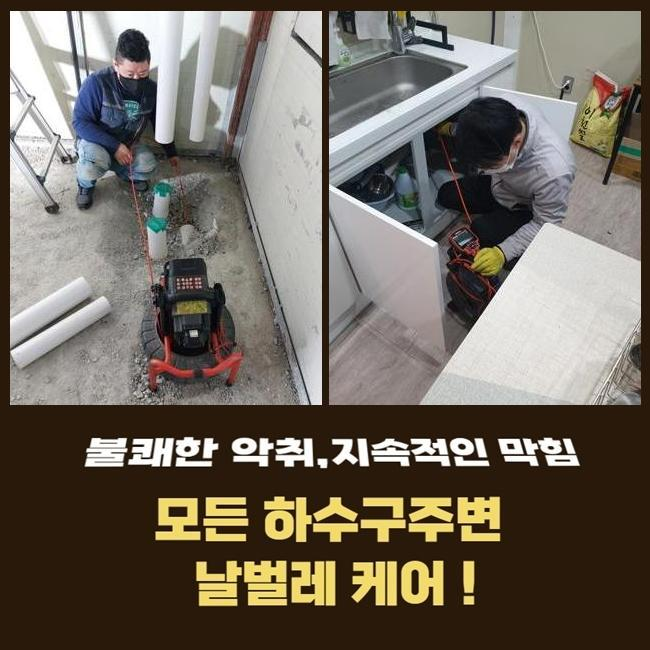
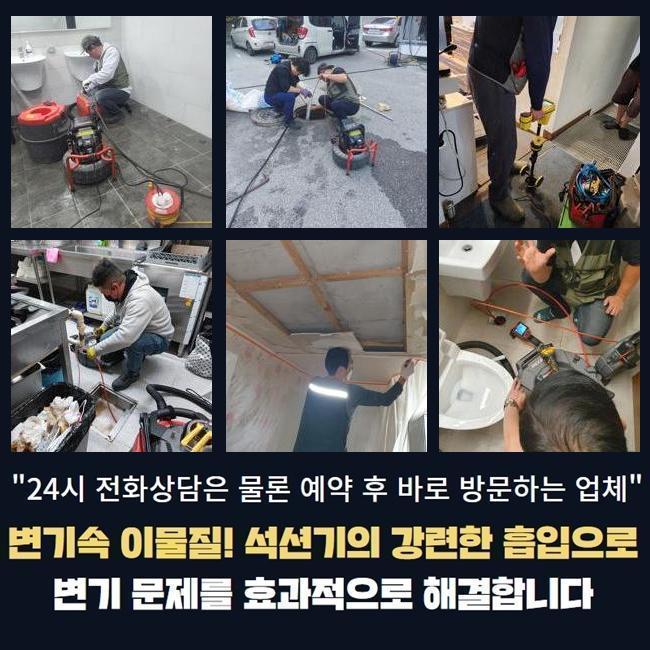
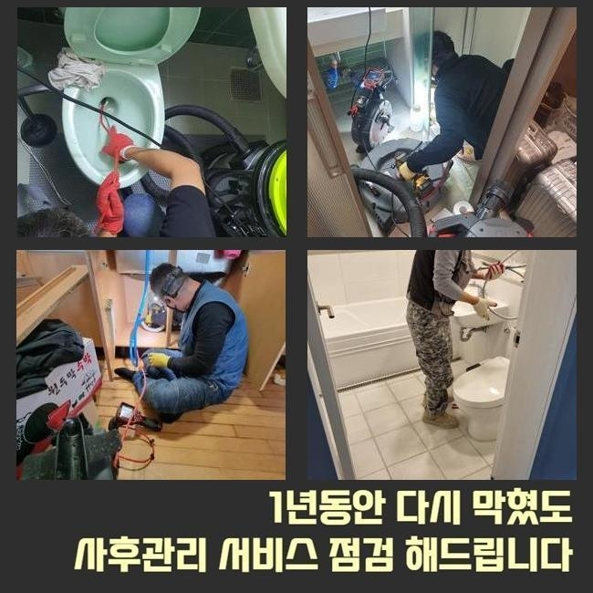
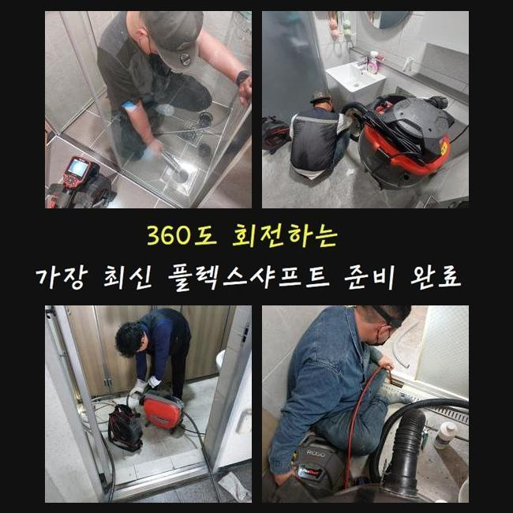
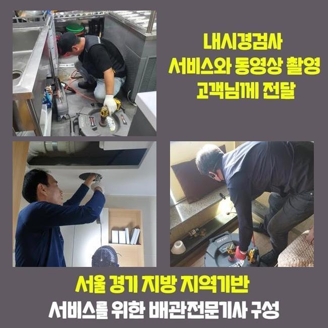
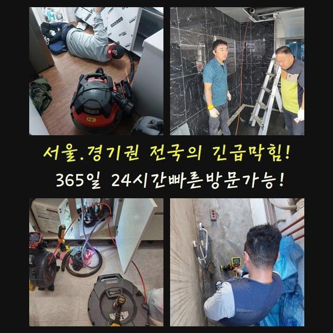

🏠 용인 풍덕천동세탁실역류 상현동 하수구청소장비 해결방법
용인 풍덕천동 싱크대막힘 전문 시공 후기

📋 작업 개요
- 위치: 용인 풍덕천동, 풍덕천동, 용인
- 서비스 유형: 싱크대막힘, 하수구막힘, 배관막힘, 누수수리, 역류해결, 뚫는업체, 배관청소, 고압세척
- 작업 일시: 2025. 2. 2. 21:25
- 업체명: 하수구수사대 (010-5615-2118)
🔍 문제 상황
용인 풍덕천동세탁실역류 상현동 하수구청소장비 해결방법
어떤장소라도 하수도가 막히게 되었다면 신속히 내방하여 해결해내는 업체랍니다
많은분들이 셀프조치를 취하실때 베이킹소다나 락스를 사용하실겁니다
락스같은것을 사용하게되면 하수구내부에 퇴적될 이물질들을 없애는데 유용하긴 합니다
용액을 부어봐도 제거하기 까다로운 이물이 있답니다
이물이 쌓이면서 덩어리형태로 굳게되는 석회물질입니다
석회물질의 경우에는 내시경장비를 사용하여 막힌상황에 대하여 알아본뒤 알맞은 방법대로 제거해주는 작업이 필요하겠습니다
전문가에게 의뢰했을때 무슨 방식으로 굳어버린 이물질들을 제거해내는지 며칠전 방문한 작업내용으로 공개해볼게요
방문한장소는 가정내부에서 일어난 배관막힘 건이에요
화장실부분에 배수관이 막히며 연락주셨어요
의뢰자분이 말씀해주신 부분들과 현장상황을 보면서 막힌이유를 조사해봤죠
고객께서는 얼마전부터 배수상태가 점점 더뎌지기 시작했으며 퀴퀴한 악취또한 동반된 상태라고 전해주셨죠

🔎 원인 분석
💡 전문가 진단: 정밀 진단 장비를 사용하여 슬러지의 고착 여부를 판명하고 타격/세척 작업을 실시했습니다.
직접 뚫어보려고 클리너같은 제품들을 이용하여 세척하셨다고 하셨는데요
그렇지만 냄새의경우 없어지지않고 물이 빠지는것도 원활한상태로 복구되지 않으셨어요
날이갈수록 되려 배수상태는 꽉 막혀버렸고 결국엔 저희들에게 요청주신 것이죠
저희들은 고객분께서 말씀하신것과 현장상황을 보면서 원인 찾기에 돌입했어요
악취현상이 일어난 막힘문제의 경우엔 막힌원인과 관련하여 확실히 알아내는게 중요하겠습니다
첫번째 과정으로 석션기계로 넘친 하수를 흡입해준뒤 부착되어있는 하수도트랩을 분해하기 시작했어요
배수구주위를 확인해보았는데 내시경장비가 없는 상태에서 원인을 발견하기 어려웠죠
하수구내부를 확인시켜주는 하수도내부 촬영장비를 투입해봤죠
촬영기가 하수구속으로 투입되니 통로에 오염물이 화면에 나타났어요
확인했지만 막힘정도를 일으키게할 정도는 아닌것으로 확인되어 더욱더 깊숙하게 투입해보니 막힌이유를 알수있었죠
각종 오염물들이 뭉쳐버린 슬러지상태의 석회물이었죠
배관속에 달라붙어 누적된 덩어리이물은 배관안을 좁게하며 좁은통로로 오염물이 지속적인 부패상태를 거치며 악취증상도 발생한건데요

🔧 작업 과정
고착물질의 경우엔 잔해물이 쌓이며 덩어리상태로 생기게되는데 배관막힘의 근본적인 원인임을 알수있겠죠
시간이흐르면서 단단해질수 있을 뿐 아니라 제거하는 방법들도 굳은형태마다 차이점이 있답니다
발견된 이물질은 크기상태와 굳은점이 심하진 않았으므로 흡입장비로 없앨수있었죠
석션장비는 하수구안에 쌓여있는 잔여물들을 흡입하는 기기라고 설명할수있어요
하수구파손이 발생되지않게 세심한 방법으로 청소하고자 카메라도 투입시킨후 수리해줬어요
내부를 확인하면서 문제지점에서 흡입기를 작동시켜 이물질들을 소거시켰죠
배수관 깊은곳까지 내시경을 투입하여 눌러붙은 잔해물과 슬러지들을 청소했죠
제거과정을 상세히 진행하고나서 내시경을 투입해서 하수관내부를 살펴보는것을 반복적으로 진행했는데요
반복적인 과정을 거치니 자리에 남아있던 기름때나 이물들이 완벽히 청소된것이 화면으로 보였습니다
이물을 전체적으로 제거하자 냄새증상도 점점 사라졌어요
마치는 작업으로 물빠짐이 어떠한지 살피기위해 샤워기를 틀어서 배수상태에 대해 점검했죠
많은양으로 이물질들을 빼냈으므로 문제없이 흘러가는것을 확인했습니다
테스트과정까지 마친후에 철수했어요
재차 말씀드리지만 전문업체의 지원이 필요한것은 막힘문제가 일어난 이유에대해 정확하게 알아내야지만 뚫어낼수있어요
굳어버린 상태에 이물이라면 셀프 제품으로 제거해내기가 쉽지않죠
그치만 처리하지않고 방치할경우 누수문제나 역류현상으로 이어질수있어요
딱딱한 상태로 슬러지가 고착화 되었으면 다른장비들이 필요할수있죠
샤프트기계로 고착물질을 분해할수있어 막힘상태마다 사용하는 기계들이 다를수가 있습니다
배관이 막혔을때 인터넷에서 검색했던 셀프방식으로 간단히 처리될거라고 생각하는 사람들이 많은데요


✅ 작업 완료
다양한 방법들을 이용해도 물내려가는게 깔끔하지 않다거나 악취문제까지 배수관에서 올라온다면 전문가를 불러서 처리하셔야 합니다
씽크대나 욕실같이 물이용이 많은장소는 간헐적으로 점검하여 막힘문제들을 예방해주시는게 제일 좋은방법이에요
셀프로 예방해보는 방법들을 알려드려보면 거름망이나 하수구트랩을 설치하면 악취현상과 막힘문제를 어느정도는 막을수있죠
상가시설과 같이 많은세대가 밀집된 시설이라면 빠른 조치가 필요하므로 언제라도 맡겨주신다면 조속히 방문드리도록 할게요!
작업하는 과정에있어 투명히 보여드리니 문제가 발생했을때 전화주신다면 세세하게 응대를 진행해드리도록 하겠습니다!




⚠️ 베란다 누수 및 방수 관리 방법
- ✅ 비가 많이 올 때 창틀 주변이나 아래층 천장에 얼룩이 생기는지 정기적으로 확인해 보세요.
- ✅ 우수관 주변 실리콘 마감이 들뜨거나 깨진 틈새가 있는지 손상 여부를 수시로 체크하세요.
- ✅ 베란다 바닥 타일의 줄눈(메지)이 소실되면 그 틈으로 물이 침투하여 누수가 유발됩니다.
- ✅ 누수 의심 증상 발견 시 방치하면 아래층 손실이 커지므로 즉시 전문가의 진단을 받으십시오.
💡 핵심 정리
- 확실한 장비 작업(내시경 점검 및 샤프트 스케일링)으로 원인을 뿌리 뽑습니다.
- 작업 후 1년 이내에 동일한 부위 재발 시 100% 무상 A/S 서비스를 보장합니다.
- 서울 · 경기 · 인천 전 지역에 24시간 언제든 긴급 출동할 수 있도록 항시 대기 중입니다.
❓ 자주 묻는 질문 (FAQ)
🚨 용인 풍덕천동 싱크대막힘 문제로 고민이신가요?
정확한 원인 진단과 확실한 시공으로 재발 없는 해결을 약속드립니다.
24시간 긴급 출동 | 서울 · 경기 · 인천 전지역 | 1년 내 재발 시 무상 A/S